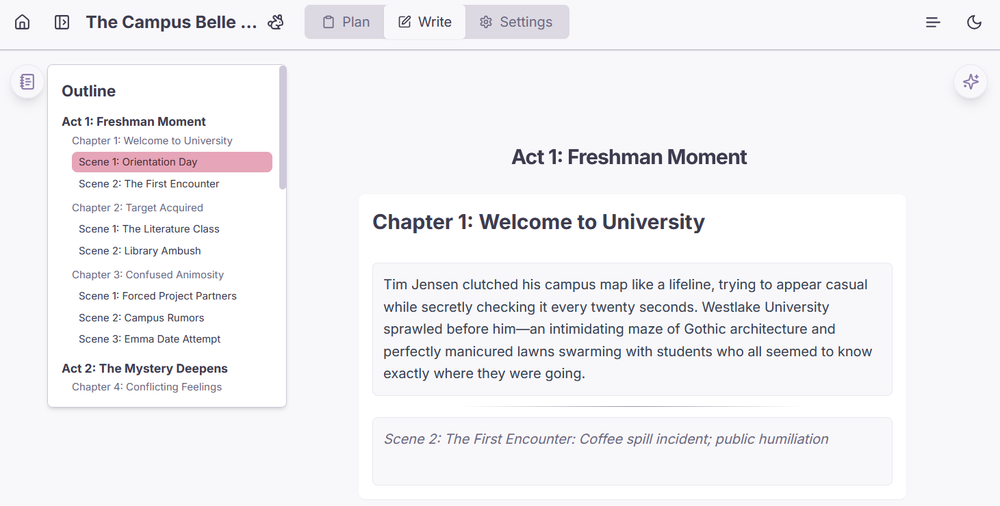

功能特性
全面的小说概览与规划
一目了然地可视化您的小说结构。通过直观的规划界面管理幕、章节和场景。链接故事元素，保持情节井然有序。
- 集中式小说管理网格。
- 分层故事规划（幕、章节、场景）。
- 详细的小说信息：简介、作者、封面。
- 从文本导入故事大纲。




丰富的概念管理与专注写作
将您故事的所有构建模块——角色、地点、传说等等——集中管理。然后，沉浸在专为专注而设计的无干扰写作空间中，并提供 Markdown 支持和便捷导航等实用工具。
- 轻松管理所有故事元素，例如角色、地点和传说。
- 使用支持 Markdown 格式的灵活编辑器逐场景编写您的故事。
- 享受流畅的写作体验，文本区域会随内容增长，并提供内置格式辅助。
- 使用直观的大纲导航器快速跳转到小说的任何部分。


深度定制与本地数据
通过广泛的主题选项（包括浅色/深色模式、预设和个性化颜色定制）打造您专属的 Plotbunni。您的所有数据都安全存储在浏览器本地，可离线访问。
- 浅色、深色和系统主题模式。
- 预定义主题预设（例如棕褐色、纸张）。
- 完全控制各个主题颜色。
- 通过 IndexedDB 进行本地数据存储，支持离线访问。
- 导出小说项目 (JSON) 和内容 (Markdown, Text, PDF)。
智能 AI 辅助
利用 AI 驱动的场景简介、大纲、描述和完整场景文本建议，打破写作障碍。配置 AI 模型和提示以满足您的需求。
- 上下文 AI 文本建议。
- AI 小说作家，用于起草整个章节。*
- 可自定义的 AI 端点配置文件和提示。
- AI 建议实时流式传输。
*AI 小说作家功能尚处于实验阶段，最适合快速原型制作。